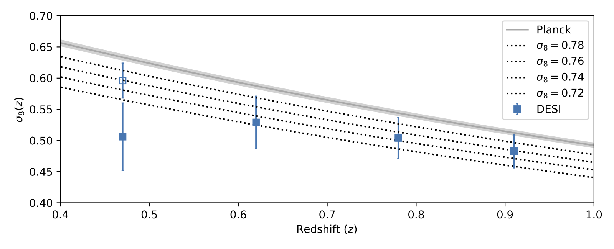
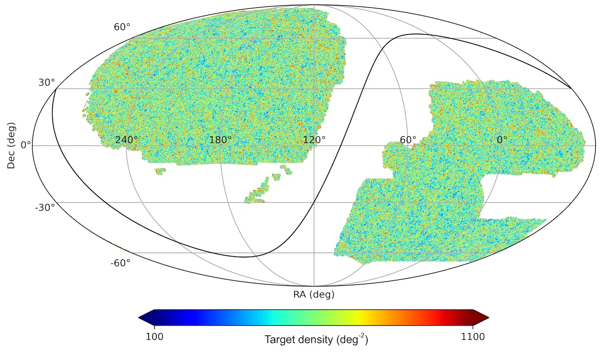

Currently, I am working on the Dark Energy Spectroscopic Instrument (DESI). DESI is the most ambitious spectroscopic galaxy survey ever undertaken. It will provide the best constraints on dark energy and perform precision tests of general relativity using baryon acoustic oscillation and redshift-space distortion measurements. My work within DESI spans a range of topics. I helped prepare the DESI Imaging Surveys, led the target selection and validation of the DESI luminous red galaxies (LRGs), and helped with DESI commissioning, Survey Validation and the assembly of Y1 data products. I am the co-convener of a DESI Key Project which is tasked with creating the galaxy catalogs and making 2-point clustering measurements for the DESI Y1 cosmology analysis, and I'm a member of the DESI survey operations team.
Current Projects
As current and upcoming galaxy surveys continue to bring down the statistical uncertainties, systematic uncertainties are starting to dominate the total error budget. I am interested in understanding (and minimizing wherever possible) the observational systematics1 in galaxy surveys. DESI, as a spectroscopic survey, relies on imaging data for target selection and spectroscopic observations for redshifts, and its clustering measurements can be affected by variations in the imaging depth, sky line residuals in the spectra, and astrophysical (Galactic) foregrounds such as stars and dust, and so on. I am working on methods to properly model the observational systematics in the DESI analysis via Monte Carlo simulations and forward modeling. While observational systematics has often been overlooked in survey designs, future surveys will have significantly more stringent requirements. What we learned from DESI will be valuable for designing the next generation of galaxy surveys.
Cross-correlations with DESI galaxiesApart from cosmology from the clustering of DESI galaxies, I am also interested in cross-correlations between DESI galaxies and observables from other programs such as galaxy lensing surveys and cosmic microwave background (CMB) experiments. In a recent paper, we measured the amplitude of large-scale structure using the Planck lensing map and a DESI LRG sample designed for cross-correlations. By combining with other datasets and leveraging the well-characterized DESI galaxy samples, we can break the degeneracies between astrophysical and cosmological parameters and achieve better constraints than with DESI alone. Some observables, such as the Sunyaev-Zel'dovich effect, are difficult to measure for individual galaxies, and their measurements usually require "stacking" the signal around many galaxies. DESI provides the ideal galaxy samples for such studies.
 Future spectroscopic surveysI am involved in designing the next generation of spectroscopic galaxy surveys –– DESI observations beyond the first 5 years and Stage-5 Spectroscopic Experiments. There are two general directions for the spectroscopic surveys in the near future: we can significantly increase the density of lower-redshift (z<~1.5) galaxies, and we can target higher-redshift galaxies with strong spectral features that facilitate redshift identification. I designed a DESI pilot program for a high-density galaxy sample at z<1 and verified the the feasibility of observing such samples with a DESI (see this white paper). I am also involved in the ongoing work to design high-z galaxy samples, specifically Lyman-alpha emitters that will be selected using medium-band imaging.
Recent Projects
The DESI Imaging Surveys provide the imaging catalogs for selecting DESI targets. I worked on many aspects of DESI Imaging, mainly helping to reduce the contamination from various imaging artifacts that could affect the uniformity of the DESI targets. Since the target sample had to be frozen once the DESI survey started, it was crucial to carefully vet the imaging data. In the run-up to the DESI survey, I identified many issues in the imaging data and helped develop fixes. Examples are: improving the per-CCD sky background estimates; de-fringing the DECam z-band images; removing the "halos" (the extended wings) of bright stars from the DECam images and developing masks for the remaining bright star artifacts.
DESI luminous red galaxy targetsI led the work to design the selection cuts for the DESI LRG targets. The LRG targets are selected using optical photometry in grz bands and infrared unWISE W1-band imaging; all the imaging data is provided by the DESI Imaging Surveys. Using data collected during DESI commissioning and Survey Validation, we optimized the selection cuts to achieve the desired redshift distribution, high redshift success rates and negligible stellar contamination. The result is a highly uniform galaxy sample at redshifts between 0.4 and 1.1. The map below shows the surface density of the LRG targets, taken from the target selection paper.
{kind=link}
Galaxy clustering using photometric data
In this work, I studied the halo occupation distribution (HOD) of the DESI LRGs. The goal is to study the clustering bias of the LRGs and to provide information for generating initial mock galaxies. Since this work was done before the DESI survey started, we had to rely only on photometric data (i.e., without the spectroscopic redshifts that were typically used for similar studies). I developed a new method to measure the HOD of the sample using photometric redshifts by properly accounting for the redshift errors, and confirmed that the LRGs are indeed highly biased galaxies that reside in the most massive dark matter halos. The method presented in this work can be directly applied for future imaging surveys such as LSST at the Rubin Observatory.
Photometric redshiftsAs a by-product of the LRG HOD study (and later the LRG cross-correlation project), we generated photometric redshifts for all objects in the DESI Imaging catalogs and made them public. The photo-z's were computed using random forest, and I compiled almost all existing large redshift datasets for training the algorithm. These general-purpose photo-z's have been used for a wide range of research in astronomy and cosmology. I have been updating the photo-z's for each new data release of the Legacy Surveys –– the latest versions are DR9 and DR10.
In an earlier paper, I published a galaxy catalog with ugrizY photometry and spectroscopic redshifts designed for testing LSST's photo-z algorithms.
Zhou, R. et al., "Comparing the Photometric Calibration of DESI Imaging and Gaia Synthetic Photometry", Res. Notes AAS, 7, 105 (2023)
Zhou, R. et al., "Target Selection and Validation of DESI Luminous Red Galaxies", AJ 165 58 (2023)
White, M., Zhou, R. et al., "Cosmological constraints from the tomographic cross-correlation of DESI Luminous Red Galaxies and Planck CMB lensing", JCAP 02 007 (2022)
Zhou, R. et al., "The Clustering of DESI-like Luminous Red Galaxies Using Photometric Redshifts", MNRAS 501, 3309 (2021)
Zhou, R. et al., "Deep ugrizy imaging and DEEP2/3 spectroscopy: a photometric redshift testbed for LSST", MNRAS 488, 4565-4584 (2019)
Dey, A. et al. (including Zhou, R.), "Overview of the DESI Legacy Imaging Surveys", AJ, 157, 168 (2019)
1 Here I use "observational systematics" broadly to mean any systematics that can affect the measurement of a galaxy, such as its photometry, morphology and redshift, and as such includes certain astrophysical foregrounds (that persists even with the perfect instrument and observing condition).